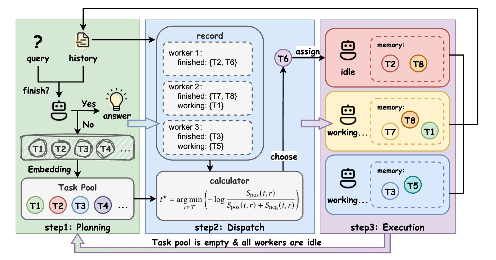
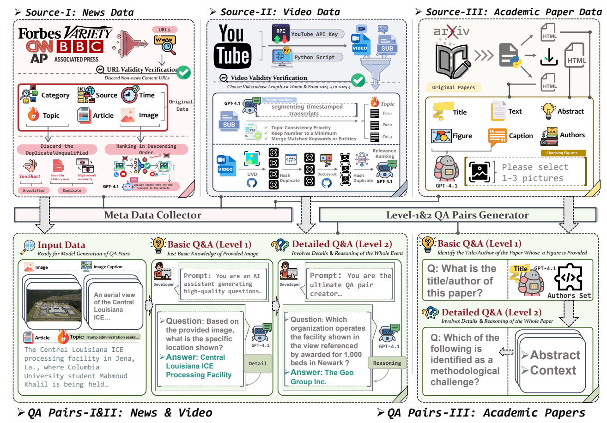
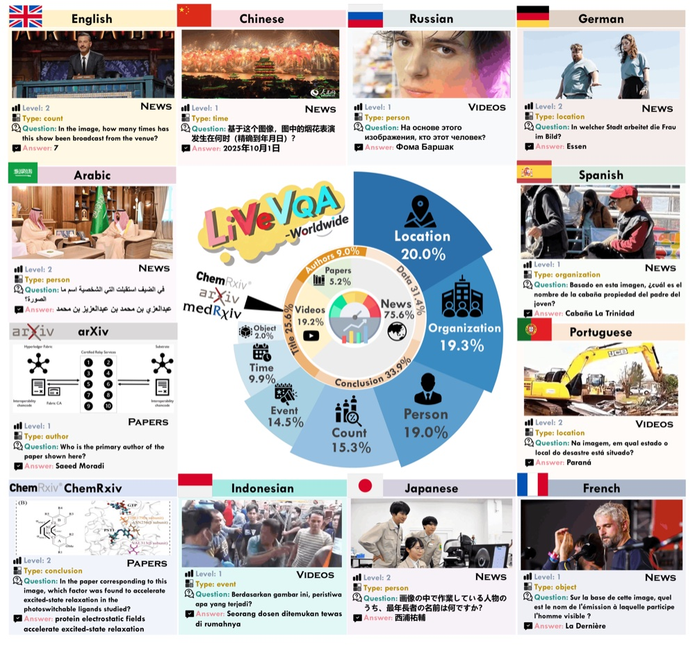
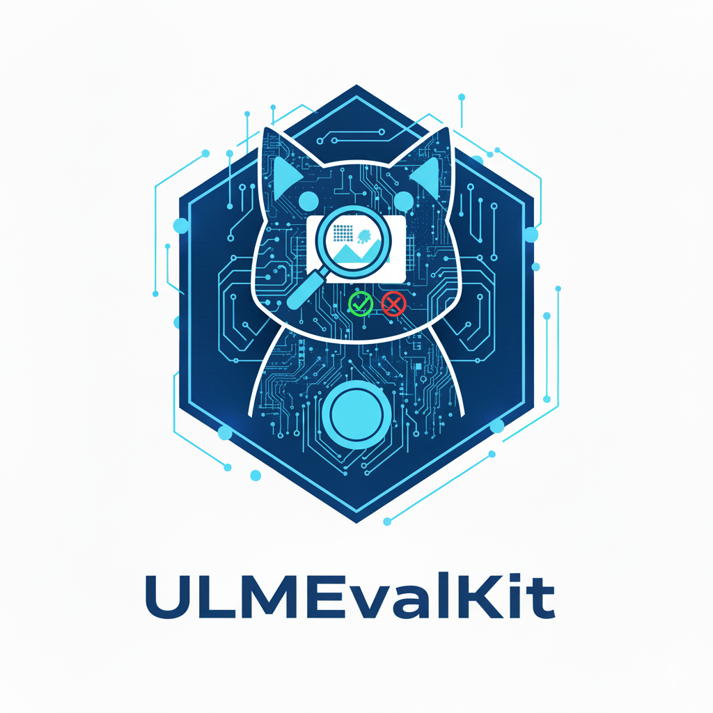
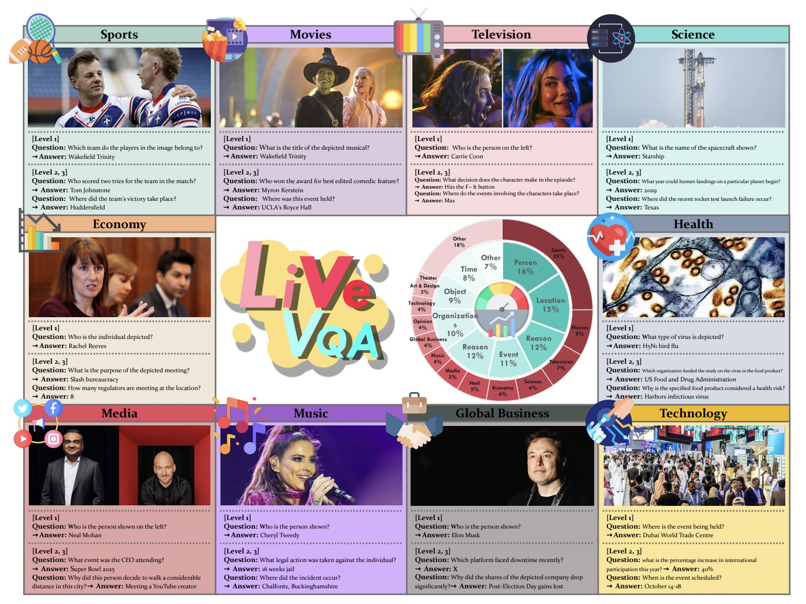

KDD 2026PhD applicant · Fall 2027
Yuyang Peng 彭雨洋
I build agents that see the live world.
CS undergraduate at Huazhong University of Science and Technology, currently a research intern with Prof. Jieyu Zhao at USC.
01
About
📍 Wuhan, China
Hi! I'm Yuyang, a fourth-year Computer Science (Turing Class) undergraduate at HUST. I'm curious about how machines can perceive a constantly changing world and act in it — from answering questions about today's news images, to coordinating fleets of LLM agents, to operating real desktop software.
Right now I'm working on computer-use agents: synthesizing GUI training data at scale and using reinforcement learning to teach agents to complete complex, multi-step tasks. Before that I competed in algorithmic programming (NOI, ICPC, CCPC), which still shapes how I think about systems and efficiency.
Multimodal Learning
Computer Vision
LLM Agents
Computer-Use Agents
Reinforcement Learning
0papers & projects
0first / co-first author
0research internships
0contest medals & awards
02
Research Journey
-
Feb 2026 — Present● Now
Computer-Use Agents
Research Intern · Prof. Jieyu Zhao · University of Southern California
- GUI synthetic data generation and reinforcement-learning training techniques for computer-use agents.
- Building automated synthesis pipelines that improve agent policy learning on complex GUI tasks.
-
Aug 2025 — Feb 2026KDD 2026 · First author
CoAct: Parallel LLM Agents
Research Intern · Prof. Qinbin Li · HUST
- Proposed an online scheduling framework based on contrastive task allocation.
- Minimizes inter-node communication overhead and improves parallel execution efficiency of LLM agents.
-
Dec 2024 — Aug 2025NeurIPS 2025 · Co-first author
LiveVQA: Live Visual Knowledge
Research Intern · Prof. Yao Wan · HUST
- Constructed a large-scale open dataset for evaluating up-to-date visual understanding.
- Developed and released an evaluation toolkit to ensure reproducibility.
-
Sep 2023 — Jun 2027 (expected)Education
B.E. in Computer Science (Turing Class)
Huazhong University of Science and Technology · Wuhan
03
Publications & Projects
* equal contribution

NeurIPS 2025
ACL 2026 Findings
Open SourceULMEvalKit: One-Stop Evaluation Toolkit for Image Generation

CVPR 2025 WorkshopLIVEVQA: Assessing Models with Live Visual Knowledge
04
Honors & Awards
★
2025
CCF Elite Collegiate Award
China Computer Federation
1
2024
Gold Medal
CCPC Girls' Division
2
2024
Silver Medal
ICPC Asia Regional · Shenyang
3
2021
Bronze Medal
National Olympiad in Informatics (NOI)